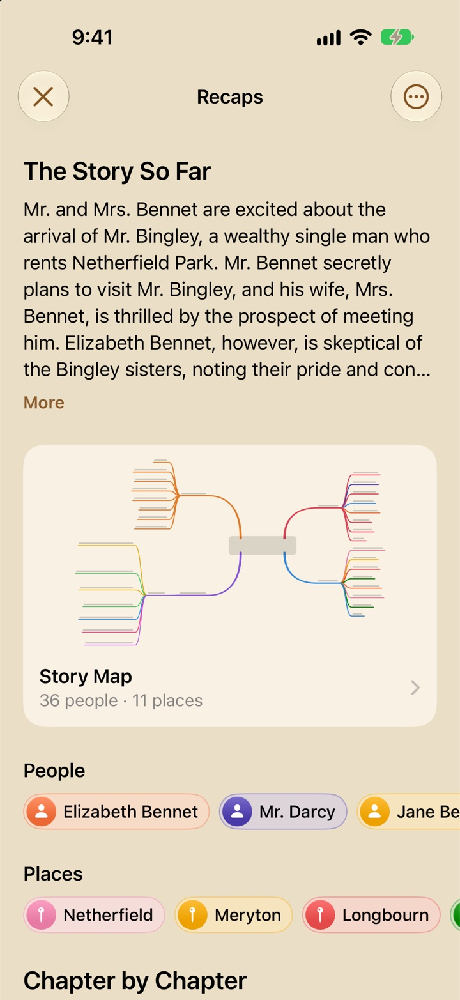
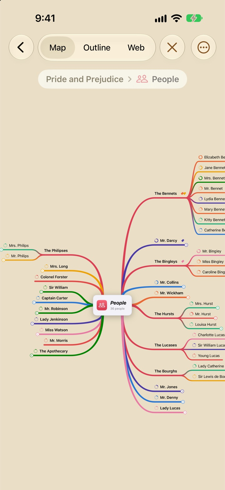

GUIDE TITLE
One or two plain sentences: what this guide covers and who it's for.
A section heading in sentence case
Body text. Name controls the way the app does, in bold: tap Pair. A path through menus goes in a path span: Settings → iCloud & Storage.

A subsection
…
Open Settings → iCloud & Storage.
Turn on Sync with iCloud.
- Setting name On
- What it does, in a sentence or two.


Questions
A question a reader would actually ask?
A direct answer.